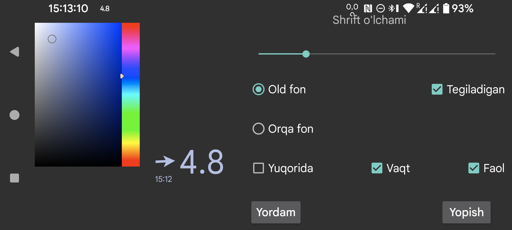

ar be de es fr hi ja nl pl ru tr uk uz zh en
Bu yerda suzuvchi glyukozaning shrift o‘lchami, old fon va orqa fon ranglarini sozlashingiz mumkin.
Tegiladigan: yoqilgan bo‘lsa, suzuvchi glyukozani barmoq bilan ko‘chirish va uzoq bosib kichraytirish mumkin. O‘chirilgan bo‘lsa, teginishlar suzuvchi glyukoza ostidagi oynaga uzatiladi, shuning uchun uning ostidagi ilovadan foydalanish mumkin. Suzuvchi glyukozani ikki marta bosib ham teginmaydigan holatga o‘tkazish mumkin.
Shaffof: fon ko‘rinmaydi.
Yuqorida: suzuvchi glyukoza Juggluco ustida ham ko‘rinadi.
Vaqt: glyukoza qiymatining vaqt belgisini ko‘rsatadi.
Faol: funksiyani yoqadi.
Suzuvchi glyukozani chap o‘rta menyu→Suzuvchi glyukoza orqali yoqish yoki o‘chirish mumkin.
Suzuvchi glyukozaning strelka tomoni bosilganda Juggluco ga o‘tasiz. Qiymat tomoni ikki marta bosilsa, u teginmaydigan holatga o‘tadi. Qiymat tomoni uzoq bosilganda faqat kichik glyukoza qiymati ko‘rinadi; kichik ko‘rinishga bosilsa yana kattalashadi. Qiymat tomoni ushlab turilib ko‘chirilsa, suzuvchi glyukoza joyi o‘zgaradi.
Boshqa ilovalar ustida ko‘rsatish uchun Juggluco ga maxsus ruxsat kerak. Wear OS va Android Automotive’da bu ruxsatni adb orqali berish kerak bo‘ladi:
adb shell pm grant tk.glucodata android.permission.SYSTEM_ALERT_WINDOW
Ba’zi soatlarda (masalan TicWatch Pro) bu ruxsatni Android/WearOS sozlamalari→Apps & notifications→App info→Juggluco→Advanced→boshqa ilovalar ustida ko‘rsatish orqali ham yoqish mumkin.